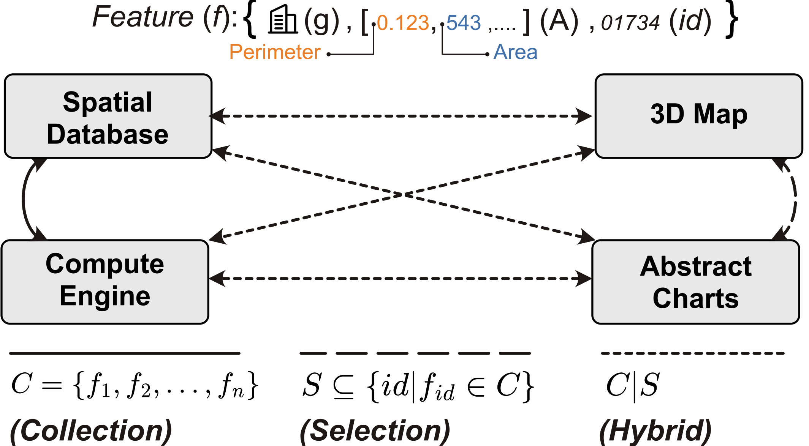

Abstract data visualization with Autark Plot
D3-based charts that read feature properties directly, and that emit and receive selections so several views stay linked.
Autark is a modular toolkit for building urban visual analytics applications in the browser. Its modules share a common data model, so data retrieved from a spatial database, processed by a computation pipeline, displayed on a map and explored through charts stays connected throughout an application.
This page introduces autk-plot, the module for abstract data visualizations: reusable charts for distributions, relationships, categories and temporal patterns. Charts are not isolated outputs; they emit selections and react to selections produced by other charts or by an autk-map view. We introduce the data model, create a first chart, transform feature attributes into aggregated chart data, and connect several plots through interaction events.
1Autark Plot
1.1 What it is
autk-plot is a D3-based charting module for attributes stored in GeoJSON feature collections. A plot receives a container element and a configuration object: the chart type, the input collection, the attributes to encode, and optional labels, dimensions, transformations and interaction events. Supported chart types include scatter plots, bar charts, line charts, tables, heat matrices and parallel-coordinates plots, each mapping feature properties to visual channels such as position, color, size or category.
It reads values straight from feature.properties, with no separate table or data frame, so it works equally on data returned by autk-db and on data already loaded in autk-map. A typical configuration specifies:
- a chart type, such as
"scatterplot"or"barchart"; - a GeoJSON feature collection;
- the feature-property names used as attributes;
- human-readable labels for axes and titles;
- optional transformations, such as binning or aggregation; and
- optional events that enable clicks or brushing.
1.2 The feature-centric model
Autark takes the geographical feature as the atomic unit of the toolkit. Many urban visual analytics systems get complicated because data and interaction operate at different levels of abstraction: a database returns rows, a renderer consumes buffers, a user interaction produces a pixel coordinate or a brush box. Autark collapses these levels into one principle: all modules operate on features.

A feature is a triple f = (g, A, id) where g is the geometry, A the set of named attributes and id the unique identifier. A collection is C = {f1, f2, ..., fn} and a selection is a subset of feature identifiers S drawn from that collection. This is why the same objects flow across modules:
autk-dbreturns a feature collection;autk-maprenders feature geometries;autk-plotbinds to feature properties;autk-computeconsumes features to produce data;- interactions return selections of features.
1.3 First example
A plot starts from a GeoJSON FeatureCollection. We use the neighborhoods of Manhattan. Inspecting one feature shows its properties; two of them, shape_leng (perimeter) and shape_area (area), are enough for a scatter plot.
To create a chart use the AutkPlot constructor with two arguments: an HTML container that determines where the chart is rendered, and a configuration object. type picks the chart ("scatterplot"), collection supplies the features, attributes.axis maps property names to the x and y axes, labels gives readable axis labels and a title, and width and height are in pixels.
2Data transformation
autk-plot may need to pre-process a FeatureCollection before drawing. A bar chart, for example, usually cannot use the raw collection, since it needs binned, sorted or aggregated values rather than one mark per feature. The transform option lets you bin, sort, aggregate arrays and reduce time series without leaving the charting API.
2.1 The @transform placeholder
The @transform placeholder tells the plot where the output of a transformation goes in the chart configuration. A transform computes new values, and those must be connected to one of the chart's visual channels. Instead of naming a property of the original collection, write @transform to say that this channel receives the derived result.
With binning-1d, the transform produces an aggregated value for each bin, so @transform goes in attributes.axis[1], where the bar height reads those computed values.
3Interactions
autk-plot supports coordinated views through interaction events. A plot emits an event when the user selects marks, and other plots, maps or interface elements can react to that selection.
3.1 Mouse events
Enable the interactions a plot needs through its events option:
PlotEvent.CLICK: emitted when the user clicks a mark.PlotEvent.BRUSH: emitted while drawing a rectangle selection.PlotEvent.BRUSH_X: emitted when brushing horizontally.PlotEvent.BRUSH_Y: emitted when brushing vertically.
3.2 Linked visualizations
Register a callback with plot.events.on(event, callback). The callback receives an object with selection, an array of indices of features in the original GeoJSON collection:
p01.events.on(PlotEvent.BRUSH, ({selection}) => {
console.log(selection);
});Because both plots below use the same neighborhood collection, a selection generated by one plot can be applied directly to the other with setSelection(). Brush the scatter plot to select neighborhoods, or click a bar, and the other view highlights the same features.
Credits
Adapted from the Observable notebook 05. Abstract Data Visualization, produced for the tutorial Urban Data Analytics with Autark at SIBGRAPI 2026. See the author list.